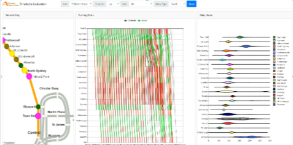

This project was focused on 3 main areas:
-
Performance measures include Train-Oriented Measures (reliability and punctuality) and Passenger-Oriented Measures (excess waiting time and excess journey time).
By considering historical driving records, scheduled timetable and passenger ride records, a robust railway performance measurement has been developed.
-
Delay Analysis: Using data-driven techniques to investigate delay propagation on single line and its influence to the whole railway network.
Based on departure dependency relationship, primary delay and secondary delay can be distinguished and therefore the root delay for a given
wide-range incident can be identified. Besides, data fusion techniques are used to find the delay causes.
-
Delay Prediction and Dynamic Visualization: Multiple data sets including train network, scheduled and actual train running timetable,
passenger etc. are involved to identify the key factors leading to delay. With the insights identified in factor analysis, a prediction model has been developed.
The prediction results are visualized dynamically and rich interaction is allowed.
Outcomes
-
An integrated platform was built with detailed insights on reliability, punctuality, historical delay accumulated at each station, waiting times for passengers to board each train at each platform, as well as prediction outcomes.
-
Benefit: this project provided great benefit to Sydney trains in terms of performance measurement and detecting problematic platforms or train lines which need to be investigated better.

Contact